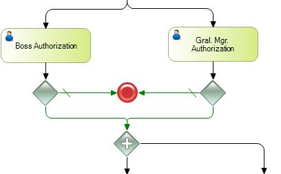

Objects: Business Process DiagramSymbolPurposeIt allows you to branch the process flow by creating two or more parallel pathways, and it can also be used to join them. DescriptionIn divergence, it simply divides the flow in two or more parallel paths. They don't evaluate any conditions. In convergence, the flow will not move forward until the source processes have finished. Properties
ExampleIn the following example, both the Leader and the General Manager must authorize the operation. If both are complied with (this is quickly detected in each Exclusive Gateway), the flow is converged in the Parallel Gateway, which doesn't make a decision and throws two parallel paths.  See AlsoEvent Gateway
|
| Backlinks | ||
| Category:BPD Gateways | Event Gateway | Exclusive Gateway |
| Toc:GeneXus BPM Suite | Inclusive Gateway |